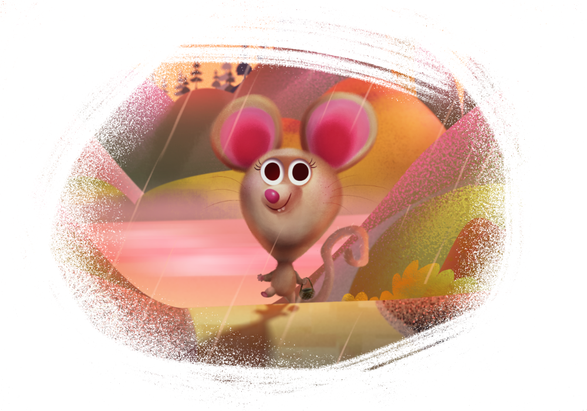

A layer mask is used to reveal a portion of a layer while the rest of the layer remains hidden. This means that you can use a mask layer to 'delete' areas of a layer that you don't want.
In Affinity Designer, two types of masking are possible: pixel masking and vector masking.

Pixel masking: performs a similar task to the erase tools with one important difference; a pixel mask can be modified, or even discarded, at any point in time.
Vector masking: this involves using a line or shape as a mask over another object that crops to the line or shape's outline.
The non-destructive power of masking
Masks are applied to designs as a separate layer, allowing them to be freely edited and moved. Mask layers affect any object below them within the same parent layer. They can also be clipped to individual objects so that only that object is affected.
To add a pixel mask to a vector layer:
In the Layers panel, select the chosen vector layer.
Jump to Pixel Persona.
Do one of the following:
To 'erase', paint on the page using the Erase Brush Tool. A mask layer is created on painting.
To 'restore' the mask, paint on the page using the Paint Brush Tool. A white fill completely restores, while grayscale fills partially restore the mask by varying amounts.
To create an empty mask layer:
From the Layers panel, click Mask Layer.
To edit a pixel mask:
In the Layers panel, select the mask thumbnail representing the mask layer.
Paint using the above tools.
To change pixel mask properties:
As you erase on the pixel mask, adjust Width, Opacity, Flow and Hardness from the Erase Brush tool's context toolbar.
To enable/disable a clipped mask layer:
-click on the mask thumbnail. A red line over the thumbnail indicates that the mask is disabled.
To add a vector mask:
Draw a filled vector object, e.g., a line or shape, which is to be your mask.
Do one of the following:
In the Layers panel, drag the created object entry directly onto the thumbnail of another 'target' object.
-click the object and select Mask to Below, if the object to be masked is directly below the masking object.
The thumbnail of the target object changes to indicate that a mask and crop have been applied.
The mask of the object is applied in a "crop to top object" operation.


 To add a pixel mask to a vector layer:
To add a pixel mask to a vector layer: